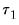
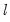
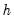
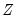
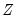

EViews reports three test statistics for the Chow breakpoint test. The F-statistic is based on the comparison of the restricted and unrestricted sum of squared residuals and in the simplest case involving a single breakpoint, is computed as:

|
(26.25)
|
To apply the Chow breakpoint test, push on the equation toolbar. In the dialog that appears, list the dates or observation numbers for the breakpoints in the upper edit field, and the regressors that are allowed to vary across breakpoints in the lower edit field.
From each individual Chow Breakpoint Test two statistics are retained, the Likelihood Ratio F-statistic and the Wald
F-statistic. The Likelihood Ratio
F-statistic is based on the comparison of the restricted and unrestricted sums of squared residuals. The Wald
F-statistic is computed from a standard Wald test of the restriction that the coefficients on the equation parameters are the same in all subsamples. Note that in linear equations these two statistics will be identical. For more details on these statistics, see
“Chow's Breakpoint Test”.
The distribution of these test statistics is non-standard. Andrews (1993) developed their true distribution, and Hansen (1997) provided approximate asymptotic p-values. EViews reports the Hansen
p-values. The distribution of these statistics becomes degenerate as  approaches the beginning of the equation sample, or

approaches the end of the equation sample. To compensate for this behavior, it is generally suggested that the ends of the equation sample not be included in the testing procedure. A standard level for this “trimming” is 15%, where we exclude the first and last 15% of the observations. EViews sets trimming at 15% by default, but also allows the user to choose other levels. Note EViews only allows symmetric trimming,
i.e. the same number of observations are removed from the beginning of the estimation sample as from the end.
The Quandt-Andrews Breakpoint Test can be evaluated for an equation by selecting from the equation toolbar. The resulting dialog allows you to choose the level of symmetric observation trimming for the test, and, if your original equation was linear, which variables you wish to test for the unknown break point. You may also choose to save the individual Chow Breakpoint test statistics into new series within your workfile by entering a name for the new series.
Tests for parameter instability and structural change in regression models have been an important part of applied econometric work dating back to Chow (1960), who tested for regime change at a priori known dates using an
F-statistic. To relax the requirement that the candidate breakdate be known, Quandt (1960) modified the Chow framework to consider the
F-statistic with the largest value over all possible breakdates. Andrews (1993) and Andrews and Ploberger (1994) derived the limiting distribution of the Quandt and related test statistics. The EViews tools for performing these tests are described in
“Chow's Breakpoint Test” and
“Quandt-Andrews Breakpoint Test”.
More recently, Bai (1997) and Bai and Perron (1998, 2003a) provide theoretical and computational results that further extend the Quandt-Andrews framework by allowing for multiple unknown breakpoints. The remainder of this section offers a brief outline of the Bai and Bai-Perron approach to structural break testing as implemented in EViews. Perron (2006) offers a useful survey of the literature and provides references for those requiring additional discussion.

|
(26.29)
|
Briefly, for a specific set of

breakpoints, say , we may minimize the sum-of-squared residuals:
Note that EViews uses the (potentially robust) F-statistic in
Equation (26.31) for the test in place of the difference in sums-of-squared residuals described in Bai (1997) and Bai and Perron (1998). Critical value and response surface computations are again provided by Bai and Perron (2003b).
The section contains a drop-down where you may specify the type of test you wish to perform. You may choose between:
The two sequential tests are based on the Bai sequential methodology as described in “Sequential Testing Procedures” above. The methods differ in whether, for a given

breakpoints, we test for an additional breakpoint in each of the

segments (), or whether we test for the single added breakpoint that most reduces the sum-of-squares ().
The choice implements the Bai-Perron tests of

globally optimized breaks against the null of no structural breaks, along with the corresponding

and

tests (
“Global L Breaks vs. None”).
The choice implements the Bai-Perron

vs.

testing procedure outlined in
“Global Plus Sequential Testing”.
The uses the information criteria computed from the global optimizers to determine the number of breaks (
“Information Criteria”).
The section of the dialog allow you to specify the maximum number of breaks or break levels to consider, the trimming percentage of the sample, the significance level for any test computations (if relevant), and assumptions regarding the computation of the variance matrices used in testing (if relevant):
|
•
|
The limits the number of breakpoints allowed via global testing and in sequential or mixed  vs.  testing. If you have selected the method, the edit field will be labeled to indicate that the restriction is on the maximum number of break levels allowed. This change in labeling reflects the fact that the Bai all subsets approach potentially adds  breaks for a given set of  breaks.
|
|
•
|
The  implicitly determines , the minimum segment length permitted when constructing a test. Small values of the trimming percentage can lead to estimates of coefficients and variances which are based on very few observations.
|
|
•
|
The drop-down menu should be used to choose between test size values of (0.01, 0.025, 0.05, and 0.10). This menu is not relevant for tests which select between models using information criteria.
|
|
•
|
The lets you specify different error distributions for different regimes (which in turn implies using different estimators for  ; see Bai and Perron, 2003b for details). Selecting this option will provide robustness of the test to error distribution variation at the cost of power if the error distributions are the same across regimes.
|
To illustrate the use of these tools in practice, we consider a simple model of the U.S. ex-post real interest rate from Garcia and Perron (1996) that is used as an example by Bai and Perron (2003a). The data, which consist of observations for the three-month treasury rate deflated by the CPI for the period 1961q1–1983q3, are provided in the series RATES in the workfile “realrate.WF1”. The regression model consists of a constant regressor, and allows for serial correlation that differs across regimes through the use of HAC covariance estimation. We allow up to 5 breaks in the model, and employ a trimming percentage of 15% . Since there are 103 observations in the sample, the trimming value implies that regimes are restricted to have at least 15 observations.
The covariance options may be specified in the dialog by selecting the tab, clicking on the button and filling out the dialog as shown:
Click on to accept the HAC settings, and then on to estimate the equation. The estimation results should be as depicted below:
To construct multiple breakpoint tests for this equation, select from the equation dialog. We consider examples for three different approaches for multiple breakpoint testing with this equation.
The default setting () instructs EViews to perform sequential testing of

versus

breaks using the methods outlined by Bai (1997) and Bai and Perron (1998).
Click on to accept the test specification and display the test results. The top portion of the dialog shows the test settings, including the test method, breakpoint variables, test options, and method of computing test covariances. Note that the test employs the same HAC covariance settings used in the original equation but assume regime specific error distributions:
EViews displays the F-statistic, along with the
F-statistic scaled by the number of varying regressors (which is the same in this case, since we only have the single, varying regressor), and the Bai-Perron critical value for the scaled statistic. The sequential test results indicate that there are three breakpoints: we reject the nulls of 0, 1, and 2 breakpoints in favor of the alternatives of 1, 2, and 3 breakpoints, but the test of 4 versus 3 breakpoints does not reject the null.
Here we see the dialog when we select in the drop-down menu. Note that there are no options for computing the coefficient covariances since this method does not require their calculation. Click on to construct the table of results.
To apply Chow’s forecast test, push on the equation toolbar and specify the date or observation number for the beginning of the forecasting sample. The date should be within the current sample of observations.
RESET stands for Regression Specification Error Test and was proposed by Ramsey (1969). The classical normal linear regression model is specified as:

|
(26.33)
|
Output from the test reports the test regression and the F-statistic and log likelihood ratio for testing the hypothesis that the coefficients on the powers of fitted values are all zero. A study by Ramsey and Alexander (1984) showed that the RESET test could detect specification error in an equation which was known
a priori to be misspecified but which nonetheless gave satisfactory values for all the more traditional test criteria—goodness of fit, test for first order serial correlation, high
t-ratios.
To apply the test, select and specify the number of fitted terms to include in the test regression. The fitted terms are the powers of the fitted values from the original regression, starting with the square or second power. For example, if you specify 1, then the test will add in the regression, and if you specify 2, then the test will add

and in the regression, and so on. If you specify a large number of fitted terms, EViews may report a near singular matrix error message since the powers of the fitted values are likely to be highly collinear. The Ramsey RESET test is only applicable to equations estimated using selected methods.
To calculate the recursive residuals, press on the equation toolbar. There are six options available for the recursive estimates view. The recursive estimates view is only available for equations estimated by ordinary least squares without AR and MA terms. The
Save Results as Series option allows you to save the recursive residuals and recursive coefficients as named series in the workfile; see
“Save Results as Series”.
for  , where
, where  is the recursive residual defined above, and s
is the recursive residual defined above, and s is the standard deviation of the recursive residuals

. If the

vector remains constant from period to period, , but if

changes,

will tend to diverge from the zero mean value line. The significance of any departure from the zero line is assessed by reference to a pair of 5% significance lines, the distance between which increases with

. The 5% significance lines are found by connecting the points:
The One-Step Forecast Test option produces a plot of the recursive residuals and standard errors and the sample points whose probability value is at or below 15 percent. The plot can help you spot the periods when your equation is least successful. For example, the one-step ahead forecast test might look like this:
The upper portion of the plot (right vertical axis) repeats the recursive residuals and standard errors displayed by the Recursive Residuals option. The lower portion of the plot (left vertical axis) shows the probability values for those sample points where the hypothesis of parameter constancy would be rejected at the 5, 10, or 15 percent levels. The points with
p-values less the 0.05 correspond to those points where the recursive residuals go outside the two standard error bounds.
To view the recursive coefficient estimates, click the Recursive Coefficients option and list the coefficients you want to plot in the
Coefficient Display List field of the dialog box. The recursive estimates of the marginal propensity to consume (coefficient C(2)), from the sample consumption function are provided below:
The Save Results as Series checkbox will do different things depending on the plot you have asked to be displayed. When paired with the
Recursive Coefficients option, will instruct EViews to save all recursive coefficients and their standard errors in the workfile as named series. EViews will name the coefficients using the next available name of the form, R_C1, R_C2, …, and the corresponding standard errors as R_C1SE, R_C2SE, and so on.
If you check the Save Results as Series box with any of the other options, EViews saves the recursive residuals and the recursive standard errors as named series in the workfile. EViews will name the residual and standard errors as R_RES and R_RESSE, respectively.
Let  be the k
be the k-th column of the data matrix (the
k-th variable in a linear equation, or the
k-th gradient in a non-linear), and

be the remaining columns. Let

be the residuals from a regression of the dependent variable,

on , and let

be the residuals from a regression of on

. The leverage plot for the
k-th coefficient is then a scatter plot of

on

.
It can easily be shown that in an auxiliary regression of on a constant and , the coefficient on  will be identical to the k
will be identical to the k-th coefficient from the original regression. Thus the original regression can be represented as a series of these univariate auxiliary regressions.
To display leverage plots in EViews select . EViews will then display a dialog which lets you choose some simple options for the leverage plots.
The box lets you enter which variables, or coefficients in a non-linear equation, you wish to plot. By default this box will be filled in with the original regressors from your equation. Note that EViews will let you enter variables that were not in the original equation, in which case the plot will simply show the original equation residuals plotted against the residuals from a regression of the new variable against the original regressors.
To add a regression line to each scatter plot, select the checkbox. If you do not wish to create plots of the partialed variables, but would rather plot the original regression residuals against the raw regressors, unselect the checkbox.

|
(26.48)
|
To display influence statistics in EViews select . EViews will bring up a dialog where you can choose how you wish to display the statistics. The box lets you choose which statistics you would like to calculate, and whether to store them as a series in your workfile. Simply check the check box next to the statistics you would like to calculate, and, optionally, enter the name of the series you would like to be created. Note that for the DFBETAS statistics you should enter a naming suffix, rather than the name of the series. EViews will then create the series with the name of the coefficient followed by the naming suffix you provide.
The box lets you select whether to display the statistics in graph form, or in table form, or both. If both boxes are checked, EViews will create a spool object containing both tables and graphs.


and
. In some cases there may be obvious points at which a break in structure might have taken place—a war, a piece of legislation, a switch from fixed to floating exchange rates, or an oil shock. Where there is no reason a priori to expect a structural break, a commonly used rule-of-thumb is to use 85 to 90 percent of the observations for estimation and the remainder for testing.
The idea of the breakpoint Chow test is to fit the equation separately for each subsample and to see whether there are significant differences in the estimated equations. A significant difference indicates a structural change in the relationship. For example, you can use this test to examine whether the demand function for energy was the same before and after the oil shock. The test may be used with least squares and two-stage least squares regressions; equations estimated using GMM offer a related test (see “GMM Breakpoint Test”).EViews reports three test statistics for the Chow breakpoint test. The F-statistic is based on the comparison of the restricted and unrestricted sum of squared residuals and in the simplest case involving a single breakpoint, is computed as:is the restricted sum of squared residuals,
is the sum of squared residuals from subsample
,
is the total number of observations, and
is the number of parameters in the equation. This formula can be generalized naturally to more than one breakpoint. The F-statistic has an exact finite sample F-distribution if the errors are independent and identically distributed normal random variables.
To apply the Chow breakpoint test, push View/Stability Diagnostics/Chow Breakpoint Test… on the equation toolbar. In the dialog that appears, list the dates or observation numbers for the breakpoints in the upper edit field, and the regressors that are allowed to vary across breakpoints in the lower edit field.From each individual Chow Breakpoint Test two statistics are retained, the Likelihood Ratio F-statistic and the Wald F-statistic. The Likelihood Ratio F-statistic is based on the comparison of the restricted and unrestricted sums of squared residuals. The Wald F-statistic is computed from a standard Wald test of the restriction that the coefficients on the equation parameters are the same in all subsamples. Note that in linear equations these two statistics will be identical. For more details on these statistics, see “Chow's Breakpoint Test”.multiple breaks which minimize the sums-of-squared residuals of the regression model Equation (26.29).
-break optimizers are the set of breakpoints and corresponding coefficient estimates that minimize sum-of-squares across all possible sets of
-break partitions.
Bai and Perron (1998) describe a generalization of the Quandt-Andrews test (Andrews, 1993) in which we test for equality of the across multiple regimes. For a test of the null of no breaks against an alternative ofbreaks, we employ an F-statistic to evaluate the null hypothesis that . The general form of the statistic (Bai-Perron 2003a) is:
breaks assumes that the alternative number of breakpoints
is pre-specified. In cases where
is not known, we may test the null of no structural change against an unknown number of breaks up to some upper-bound, . This type of testing is termed double maximum since it involves maximization both for a given
and across various values of the test statistic for
.
Bai (1997) describes an intuitive approach for detecting more than one break. The procedure involves sequential application of breakpoint tests.Note that EViews uses the (potentially robust) F-statistic in Equation (26.31) for the test in place of the difference in sums-of-squared residuals described in Bai (1997) and Bai and Perron (1998). Critical value and response surface computations are again provided by Bai and Perron (2003b).From an estimated equation, bring up the multiple break testing dialog, by clicking on View/Stability Diagnostics/Multiple Breakpoint Test...The Test specification section contains a Method drop-down where you may specify the type of test you wish to perform. You may choose between:The two sequential tests are based on the Bai sequential methodology as described in “Sequential Testing Procedures” above. The methods differ in whether, for a givenglobally optimized breaks against the null of no structural breaks, along with the corresponding
and
tests, simply call up the dialog and change the Method drop-down to Global L breaks vs. none:
We again leave the remaining settings at their default values with the exception of the Allow error distributions to differ across breaks checkbox which is selected. Click on OK to perform the test.The bottom of the portion shows the global optimizers for the breakpoints for each number of breaks:Note that the three-break global optimizers are the same as those obtained in the sequential testing example (“Sequential Bai-Perron”). This equivalence will not hold in general.Here we see the dialog when we select Global information criteria in the Method drop-down menu. Note that there are no options for computing the coefficient covariances since this method does not require their calculation. Click on OK to construct the table of results.EViews reports two test statistics for the Chow forecast test. The F-statistic is computed asis the residual sum of squares when the equation is fitted to all
sample observations, is the residual sum of squares when the equation is fitted to observations, and
is the number of estimated coefficients. This F-statistic follows an exact finite sample F-distribution if the errors are independent, and identically, normally distributed.
To apply Chow’s forecast test, push View/Stability Diagnostics/Chow Forecast Test… on the equation toolbar and specify the date or observation number for the beginning of the forecasting sample. The date should be within the current sample of observations.RESET stands for Regression Specification Error Test and was proposed by Ramsey (1969). The classical normal linear regression model is specified as:not been included in the estimation, and
is the i-th diagonal element of the Hat Matrix, i.e. . The RStudent is also numerically identical to the t-statistic that would result from putting a dummy variable in the original equation which is equal to 1 on that particular observation and zero elsewhere. Thus it can be interpreted as a test for the significance of that observation.
 observations in your data set of observations into
observations in your data set of observations into  observations to be used for estimation, and observations to be used for testing and evaluation. In time series work, you will usually take the first
observations to be used for estimation, and observations to be used for testing and evaluation. In time series work, you will usually take the first  observations for estimation and the last for testing. With cross-section data, you may wish to order the data by some variable, such as household income, sales of a firm, or other indicator variables and use a subset for testing.
observations for estimation and the last for testing. With cross-section data, you may wish to order the data by some variable, such as household income, sales of a firm, or other indicator variables and use a subset for testing.  distribution with degrees of freedom equal to
distribution with degrees of freedom equal to  under the null hypothesis of no structural change, where
under the null hypothesis of no structural change, where  is the number of subsamples.
is the number of subsamples. distribution with
distribution with  degrees of freedom, where
degrees of freedom, where  is the number of subsamples.
is the number of subsamples. and
and  . The
. The  test statistics from those Chow tests are then summarized into one test statistic for a test against the null hypothesis of no breakpoints between
test statistics from those Chow tests are then summarized into one test statistic for a test against the null hypothesis of no breakpoints between  and .
and . periods and
periods and  potential breaks (producing
potential breaks (producing  regimes). For the observations in regime
regimes). For the observations in regime  we have the regression model
we have the regression model . Note that the regressors are divided into two groups. The
. Note that the regressors are divided into two groups. The  variables are those whose parameters do not vary across regimes, while the
variables are those whose parameters do not vary across regimes, while the  variables have coefficients that are regime specific.
variables have coefficients that are regime specific. .
. and
and  so that efficient algorithms for computing the optimizers are required. Practical algorithms for computing the global optimizers for multiple breakpoint models are outlined in Bai and Perron (2003a).
so that efficient algorithms for computing the optimizers are required. Practical algorithms for computing the global optimizers for multiple breakpoint models are outlined in Bai and Perron (2003a). -breaks versus none test (along with the double maximum variants of this test in which
-breaks versus none test (along with the double maximum variants of this test in which  is determined as part of the testing procedure), and information criterion methods (Yao, 1988 and Liu, Wi, and Zidek, 1997) for determining the number of breaks.
is determined as part of the testing procedure), and information criterion methods (Yao, 1988 and Liu, Wi, and Zidek, 1997) for determining the number of breaks. -break estimate of
-break estimate of  , , and
, , and  is an estimate of the variance covariance matrix of
is an estimate of the variance covariance matrix of  which may be robust to serial correlation and heteroskedasticity, whose form depends on assumptions about the distribution of the data and the errors across segments. (We do not reproduce the formulae for the estimators of the variance matrices here as there are a large number of cases to consider; Bai-Perron (2003a) offer detailed descriptions of the various cases.)
which may be robust to serial correlation and heteroskedasticity, whose form depends on assumptions about the distribution of the data and the errors across segments. (We do not reproduce the formulae for the estimators of the variance matrices here as there are a large number of cases to consider; Bai-Perron (2003a) offer detailed descriptions of the various cases.) chooses the alternative that maximizes the statistic across the number of breakpoints. An alternative approach, denoted
chooses the alternative that maximizes the statistic across the number of breakpoints. An alternative approach, denoted  applies weights to the individual statistics so that the implied marginal
applies weights to the individual statistics so that the implied marginal  -values are equal prior to taking the maximum.
-values are equal prior to taking the maximum. breakpoints under the null are obtained by global minimization of the sum-of-squared residuals. We may therefore view this approach as an
breakpoints under the null are obtained by global minimization of the sum-of-squared residuals. We may therefore view this approach as an  versus
versus  test procedure that combines the global and sequential testing approaches.
test procedure that combines the global and sequential testing approaches. global optimizing breakpoints and performs a single test of parameter constancy using the subsample break that most reduces the-sum-of-squared residuals. Note that in this case, we only test for constancy in a single subsample.
global optimizing breakpoints and performs a single test of parameter constancy using the subsample break that most reduces the-sum-of-squared residuals. Note that in this case, we only test for constancy in a single subsample. ‘s, you may simply delete them from the list. Note that there must be at least one variable in the list.
‘s, you may simply delete them from the list. Note that there must be at least one variable in the list. . Bai and Perron (2003a) who, with one exception, do not impose the restriction that the distribution of the
. Bai and Perron (2003a) who, with one exception, do not impose the restriction that the distribution of the  is the same across regimes. In cases where you are testing using robust variances, EViews will offer you a choice of whether to assume a common distribution for the data across regimes.
is the same across regimes. In cases where you are testing using robust variances, EViews will offer you a choice of whether to assume a common distribution for the data across regimes.  statistics are shaded for easy identification.
statistics are shaded for easy identification.  , and the other using a long subperiod
, and the other using a long subperiod  . Differences between the results for the two estimated models casts doubt on the stability of the estimated relation over the sample period. The Chow forecast test can be used with least squares and two-stage least squares regressions.
. Differences between the results for the two estimated models casts doubt on the stability of the estimated relation over the sample period. The Chow forecast test can be used with least squares and two-stage least squares regressions. distribution with degrees of freedom equal to the number of forecast points
distribution with degrees of freedom equal to the number of forecast points  under the null hypothesis of no structural change.
under the null hypothesis of no structural change.  is presumed to follow the multivariate normal distribution
is presumed to follow the multivariate normal distribution  . Specification error is an omnibus term which covers any departure from the assumptions of the maintained model. Serial correlation, heteroskedasticity, or non-normality of all violate the assumption that the disturbances are distributed . Tests for these specification errors have been described above. In contrast, RESET is a general test for the following types of specification errors:
. Specification error is an omnibus term which covers any departure from the assumptions of the maintained model. Serial correlation, heteroskedasticity, or non-normality of all violate the assumption that the disturbances are distributed . Tests for these specification errors have been described above. In contrast, RESET is a general test for the following types of specification errors: does not include all relevant variables.
does not include all relevant variables. and
and  should be transformed to logs, powers, reciprocals, or in some other way.
should be transformed to logs, powers, reciprocals, or in some other way. and
and  , which may be caused, among other things, by measurement error in
, which may be caused, among other things, by measurement error in  , simultaneity, or the presence of lagged
, simultaneity, or the presence of lagged  values and serially correlated disturbances.
values and serially correlated disturbances. . Therefore, the null and alternative hypotheses of the RESET test are:
. Therefore, the null and alternative hypotheses of the RESET test are: . The crucial question in constructing the test is to determine what variables should enter the
. The crucial question in constructing the test is to determine what variables should enter the  matrix. Note that the  matrix may, for example, be comprised of variables that are not in the original specification, so that the test of
matrix. Note that the  matrix may, for example, be comprised of variables that are not in the original specification, so that the test of  is simply the omitted variables test described above.
is simply the omitted variables test described above.  . For example, if a linear relation,
. For example, if a linear relation, :
: on
on  . The superscripts indicate the powers to which these predictions are raised. The first power is not included since it is perfectly collinear with the
. The superscripts indicate the powers to which these predictions are raised. The first power is not included since it is perfectly collinear with the  matrix.
matrix.  coefficients to be estimated in the
coefficients to be estimated in the  vector, then the first
vector, then the first  observations are used to form the first estimate of
observations are used to form the first estimate of  . The next observation is then added to the data set and
. The next observation is then added to the data set and  observations are used to compute the second estimate of
observations are used to compute the second estimate of  . This process is repeated until all the
. This process is repeated until all the  sample points have been used, yielding estimates of the
sample points have been used, yielding estimates of the  vector. At each step the last estimate of
vector. At each step the last estimate of  can be used to predict the next value of the dependent variable. The one-step ahead forecast error resulting from this prediction, suitably scaled, is defined to be a
can be used to predict the next value of the dependent variable. The one-step ahead forecast error resulting from this prediction, suitably scaled, is defined to be a  the corresponding vector of observations on the dependent variable. These data up to period
the corresponding vector of observations on the dependent variable. These data up to period  give an estimated coefficient vector, denoted by . This coefficient vector gives you a forecast of the dependent variable in period
give an estimated coefficient vector, denoted by . This coefficient vector gives you a forecast of the dependent variable in period  . The forecast is
. The forecast is  , where is the row vector of observations on the regressors in period
, where is the row vector of observations on the regressors in period  . The forecast error is , and the forecast variance is given by:
. The forecast error is , and the forecast variance is given by: is defined in EViews as:
is defined in EViews as: .
. under the hypothesis of parameter constancy is:
under the hypothesis of parameter constancy is: . The significance of the departure of
. The significance of the departure of  from its expected value is assessed by reference to a pair of parallel straight lines around the expected value. See Brown, Durbin, and Evans (1975) or Johnston and DiNardo (1997, Table D.8) for a table of significance lines for the CUSUM of squares test.
from its expected value is assessed by reference to a pair of parallel straight lines around the expected value. See Brown, Durbin, and Evans (1975) or Johnston and DiNardo (1997, Table D.8) for a table of significance lines for the CUSUM of squares test.  against
against  and the pair of 5 percent critical lines. As with the CUSUM test, movement outside the critical lines is suggestive of parameter or variance instability.
and the pair of 5 percent critical lines. As with the CUSUM test, movement outside the critical lines is suggestive of parameter or variance instability. might have come from the model fitted to all the data up to that point, each error can be compared with its standard deviation from the full sample.
might have come from the model fitted to all the data up to that point, each error can be compared with its standard deviation from the full sample. .
.